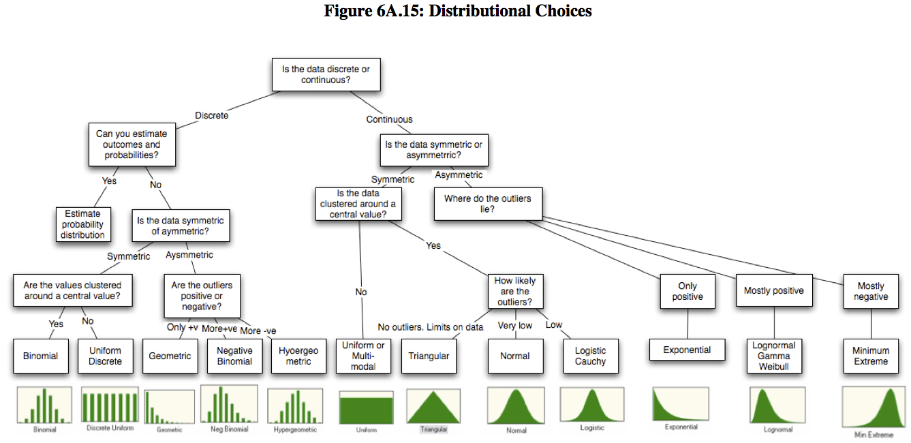

| x | px |
|---|---|
| Abaixo (x = 0) | 0.67 |
| Acima (x = 1) | 0.33 |
Regressão para pesquisas sociais
Aula 2 - Modelagem de dados de natureza contínua
Thiago Cordeiro Almeida
Doutorando, Centre d’Estudis Demogràfics (CED, Espanha)
Pesquisador Assistente, Cebrap
September 15, 2025
Antes de começar…
lista de presença!
Antes de começar (2)…
Dúvidas gerais sobre a aula anterior?
Exercício da aula anterior: dúvidas, comentários, considerações?

Estrutura da aula
Tópicos que vamos cobrir hoje são:
Fluxo de análise de dados contínuos com o uso de modelagem
Conceitos, noções (e jargões) econométricos
Exemplo empírico do dia
-
Regressão linear simples
Intuição e formalização
Propriedade e pressupostos
Mão na massa!
-
Regressão linear multivariada
Intuição e formalização
Novidades em relação à regressão linear simples
Mão na massa!: interpretação
Fluxo de análise de dados contínuos
A partir do uso de modelos
Fluxo de análise de dados
Conceitos e definições estatísticas importantes
Modelos probabilísticos
Modelos probabilísticos
Na aula anterior, exploramos diferentes formas de analisar descritivamente a distribuição de determinado fenômeno através de diferentes tipos de medida.
Em termos estatísticos, para cada distribuição observada em uma amostra, há (ou haveria) um modelo teórico que descreveria estatísticamente essa mesma distribuição.
Modelos probabilísticos
Exemplo: programa pé-de-meia.
Estamos interessados em saber a parcela dos estudantes que tiveram nota em matemática acima da média no ENEM dentro do universo de pessoas que participaram do programa.
Abordagem empírica
- Calcularia a proporção de pessoas que tiveram a média acima como: \[p(X)=\frac{e}{n}\]
Em que,
- \(e\): evento, no caso, num. acima da média;
- \(n\): observações, no caso, num. estudantes no ENEM.
Abordagem probabilística
- Estabeleceria o evento de interesse e o universo amostral de análise
Evento: proporção de estudantes que participaram do ENEM e do programa os quais tiveram nota acima da média em matemática.
Universo amostral: estudantes que participaram do ENEM e do programa.
Estabeleceria o modelo probabilístico que se associa ao evento de interesse
Estimaria a probabilidade desse evento de interesse ocorrer.
Modelos probabilísticos
Sob o pressuposto de que nossa amostra de estudantes que participaram do ENEM e do programa é i.i.d.1, o que obteríamos calculando via abordagem empírica seria exatamente o mesmo ao calcular via abordagem probabilística!!!
Ou seja,
Podemos estudar propriedades estatísticas dos fenômenos sociais em que trabalhamos não só restritos a uma determinada amostra em que temos, mas fazendo generalizações desses fenômenos;
Utilizando modelos que representem esses fenômenos, conseguimos ter estimativas do comportamento deles que incorporem incertezas inerentes a eles.
Modelagens são formas de adicionar complexidade ao estudo desses fenômenos a partir das suas interações com outros fenômenos sociais.
Modelos probabilísticos
Relação entre modelos probabilísticos e modelos de regressão
O que fazemos em nossos modelos de regressão é, basicamente, estudar as propriedades da nossa variável de estudo através de relações associadas ao melhor modelo probabilístico que a descreve.
Com isso, podemos:
Prever resultados futuros condicionados a um conjunto de outras variáveis (probabilidade condicional a um conjunto de \(X\))
Estabelecer em que medida variando uma das variáveis, seus valores são afetados (probabilidade condicional a \(X\))
Obter valores esperados e incerteza de seus resultados (esperança e variância)
Conceitos e definições estatísticas importantes
Variável aleatória (v.a.)
Variável aleatória
Uma variável \(X\) é aleatória se cada um de seus valores – ou um intervalo entre valores – está associado a uma probabilidade \(p(X)\).
Exemplo
Vamos voltar ao pé-de-meia.
Poderíamos dizer que para a variável \(X\) definida como ter nota de matemática no ENEM acima da média dos demais participantes do programa, há uma probabilidade \(p(X)\), de modo que:
Variável aleatória
Variáveis aleatórias \(v.a.\) apresentam algumas propiedades que serão importantes nos modelos que utilizaremos:
Esperança de X
Se uma determinada variável é aleatória e o seu seu modelo de probabilidade é conhecido, a sua Esperança – também chamada de média – pode ser conhecida.
Geralmente é apresentada enquanto: \(E(X)\), sendo \(X\) uma variável aleatória.
Variabilidade de X
Do mesmo modo, se uma determinada variável é aleatória e é conhecido o seu modelo de probabilidade, a sua variância – ou sua variabilidade em torno da média – também pode ser conhecido.
Geralmente é apresentada enquanto: \(V(X) = E[X - E(X)]^2\), sendo \(X\) uma variável aleatória.
Variável aleatória
Relação entre variáveis aleatórias
Conhecendo-se as propriedades de uma variável aleatória, pode-se relacionar duas ou mais variáveis aleatórias, de modo que:
\[Y = f(X_1, X_2, X_3, X_4,...,X_n) = X_1 + X_2 + X_3 + X_4 + ... + X_n\]
Desse modo,
\[E(Y) = E(X_1 + X_2 + X_3 + X_4 + ... + X_n)\]
\[E(Y) = E(X_1) + E(X_2) + E(X_3) + E(X_4) + ... + E(X_n)\]
Portanto, tudo o que precisamos saber é qual o modelo probabilístico – \(f(\cdot)\) – associado à determinado fenômeno social – que trataremos como uma \(v.a.\). A partir disso, podemos relacionar esse fenômeno social de interesse com outros fenômenos – outras \(v.a.\)
Tipos de Variável Aleatória
As \(v.a.\) podem ser divididas entre discretas e contínuas

Conceitos e definições estatísticas importantes
Algumas nomenclaturas
Algumas nomenclaturas
Variável a ser estudada
\(Y\): Variável dependente - variável a ser medida - variável a ser testada - variável resposta - variável resultado
Variáveis que explicam a variável de estudo
\(X\): Variável independente - variável explicativa - variável preditora
Variáveis independentes que não estamos interessados em analisar
Há muitos casos em que estamos interessados em uma – ou um conjunto de – variável(is) independente(s). Todavia, por razões das propriedades dos modelos, é importante que insiramos outras variáveis na análise. Estas são chamadas de variáveis controle/confundidoras.
- Em geral, seus resultados não são explicados, mas são explicitados.
Modelo de regressão Linear
Modelo de Regressão Linear Simples (RLS)
Modelo de Regressão Linear Simples (RLS)
Nos modelos de regressão em geral, estamos interessados em explicar como a variação de uma determinada variável afeta a variação de uma outra variável (variável resposta).
No caso simplificado do modelo RLS, temos as seguintes características:
Uma variável aleatória resposta/dependente de natureza contínua: \(Y\)
Uma variável aleatória explicativa: \(X\)
Um fator de erro do modelo que nos diz quanto da variabilidade de \(Y\) que continua não explicado por \(X\): \(\epsilon\)
Modelo de Regressão Linear Simples (RLS)
Modelo de Regressão Linear Simples (RLS)
Modelo de Regressão Linear Simples (RLS)
Formalização
Dizemos que a representação geral (ou populacional) de um determinado modelo de regressão é dada por:
\[Y_i = \alpha + \beta_1 \cdot X_i + \epsilon_i\]
Em que:
-
\(\alpha\): intercepto do modelo.
- Nos diz qual valor \(Y\) assume quando \(X\) é igualado a \(0\).
-
\(\beta_1\): coeficiente do modelo associado à variável \(X\).
Nos diz qual a magnitude da mudança em \(Y\) quando \(X\) varia uma unidade para cima ou para baixo.
É também chamado de inclinação da reta, devido à suas propriedades estatísticas do modo em que é calculado1
\(\epsilon_i\): como descrito anteriormente, é o quanto não está sendo explicado em \(Y_i\) devido à variação estimada em \(X_i\).
Modelo de Regressão Linear Simples (RLS)
\[Y_i = \alpha + \beta_1 \cdot X_i + \epsilon_i\]
Hipótese: independência entre erro e variáveis observadas
A hipótese-chave é que a média dos erros condicionada na variável explicativa \(X_i\) é igual a zero, ou seja: \[E[\epsilon_i|X_i]=0\]
Em outras palavras, estamos assumindo que não há nenhum fator contido em \(\epsilon\) que seja correlacionado com \(X\), de modo que \(\beta\) seja um efeito puro de X.
Modelo de Regressão Linear Simples (RLS)
Modelo populacional: \[Y_i = \alpha + \beta_1 \cdot X_i + \epsilon_i\]
Quando vamos estimar os nossos parâmetros para a nossa amostra, assumimos os valores médios observados, isto é:
\[\bar{Y_i} = \hat{\alpha} + \hat{\beta_1} \cdot \bar{X_i} + \hat{\epsilon_i}\]
Modelo de Regressão Linear Simples (RLS)
Estimando parâmetros do modelo
Os únicos valores que não conhecemos são referentes a \(\alpha\) e \(\beta\), uma vez que \(\epsilon\) é obtido residualmente.
Tudo o que precisamos fazer é estimar os parâmetros desconhecidos do modelo populacional. O modelo a ser estimado consiste em:
\[\bar{Y_i} = \hat{\alpha} + \hat{\beta_1} \cdot \bar{X_i} + \hat{\epsilon_i}\]
Mínimos Quadrados Ordinários (MQO)
Os estimadores de MQO asseguram, via relações estatísticas, que tenhamos valores para nossos parâmetros desconhecidos que minimizem o desvio dos resíduos.
Isto é, temos a reta que melhor se ajusta aos nossos dados de modo que passe mais perto possível de cada ponto.
Modelo de Regressão Linear Simples (RLS)
Estimando parâmetros do modelo
Os únicos valores que não conhecemos são referentes a \(\alpha\) e \(\beta\), uma vez que \(\epsilon\) é obtido residualmente.
Tudo o que precisamos fazer é estimar os parâmetros desconhecidos do modelo populacional. O modelo a ser estimado consiste em:
\[\bar{Y_i} = \hat{\alpha} + \hat{\beta_1} \cdot \bar{X_i} + \hat{\epsilon_i}\]
Mínimos Quadrados Ordinários (MQO)
Acionando a hipótese descrita anteriormente, temos:
\(\hat{\alpha} = \bar{Y_i} - [\hat{\beta_1} \cdot \bar{X_i}]\)
\(\hat{\beta_1} = \frac{\bar{Y_i} - \hat{\alpha}}{\bar{X_i}}\)
Modelo de Regressão Linear Simples (RLS)
\[\overline{Divorcio} = \hat{\alpha} + \hat{\beta_1} \cdot \overline{Margarina} + \hat{\epsilon}\]
Aplicando em R:
Modelo de Regressão Linear Simples (RLS)
\[\overline{Divorcio} = \hat{\alpha} + \hat{\beta_1} \cdot \overline{Margarina} + \hat{\epsilon}\]
Aplicando em R:
Call:
lm(formula = divorcio ~ margarina, data = base)
Residuals:
Min 1Q Median 3Q Max
-0.05583 -0.01816 -0.01452 0.03601 0.04625
Coefficients:
Estimate Std. Error t value Pr(>|t|)
(Intercept) 3.308626 0.048032 68.88 0.0000000000022 ***
margarina 0.201386 0.008735 23.05 0.0000000132968 ***
---
Signif. codes: 0 '***' 0.001 '**' 0.01 '*' 0.05 '.' 0.1 ' ' 1
Residual standard error: 0.03841 on 8 degrees of freedom
Multiple R-squared: 0.9852, Adjusted R-squared: 0.9833
F-statistic: 531.5 on 1 and 8 DF, p-value: 0.0000000133Pausa!
Modelo de regressão Linear
Propriedades do MRL
Propriedades do MRL
Para assegurar que, através do MQO, tenhamos estimadores não viesados e mais eficientes, devemos assegurar que 6 hipóteses sejam asseguradas:
O modelo é linear nos parâmetros;
Amostra é aleatória e segue o modelo populacional descrito em H1;
Inexistência variáveis constantes ou que não tenham uma relação linear exata com outra variável explicativa;
Independência entre erro e variáveis observadas;
Variância do erro constante para todas as variáveis explicativas;
O erro segue uma distribuição normal com média 0 e variância constante
H1: O modelo é linear nos parâmetros
H2: Amostra é aleatória e segue o modelo populacional descrito em H1
H3: Inexistência variáveis constantes ou que não tenham uma relação linear exata com outra variável explicativa
H4: Independência entre erro e variáveis observadas
H5: Variância do erro constante para todas as variáveis explicativas
H6: O erro segue uma distribuição normal com média 0 e variância constante
Propriedades do MRL
Assegurando a existência de H1-H4
Estimadores MQO não viesados. Isto é, representam o que seria o valor a ser obtido na população estudada, mesmo depois de implementar em \(N\) diferentes amostras.
Assegurando a existência de H5
Estimadores MQO sendo os mais eficientes. Isto é, asseguram a menor variância possível dentre outros processos de estimação dos parâmetros.
Assegurando a existência de H1-H5
Temos os melhores estimadores para o modelo populacional. À medida que aumenta o tamanho da amostra, aproxima-se mais do valor do parâmetro na população e com menor incerteza sobre ele.
Propriedades do MRL
Assegurando a existência de H1-H6
É possível fazer inferência sob a significância estatística dos coeficientes estimados em comparação com o valor do parâmetro na população.
Exemplo da aula!
…
…
Explicar o caso
Dados
Quais as etapas seguiremos
Vamos lá!
…

Modelo de regressão Linear
Modelo de Regressão Linear Múltipla (RLM)
Modelo de Regressão Linear Múltipla (RLM)
Intuição
Formalização
O que muda entre o RLS e RLM?
Ir para exercício para fechar a aula

cebrap.lab - Introdução à análise de regressão para pesquisas sociais